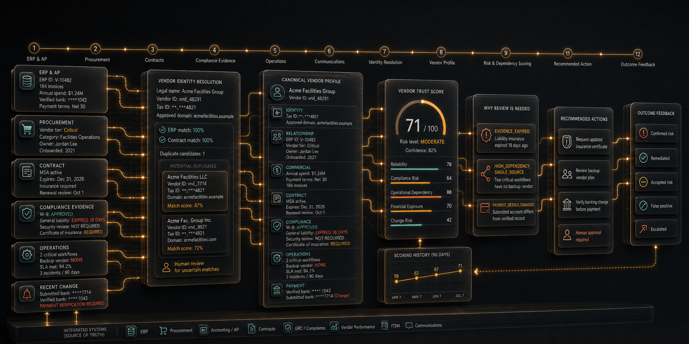
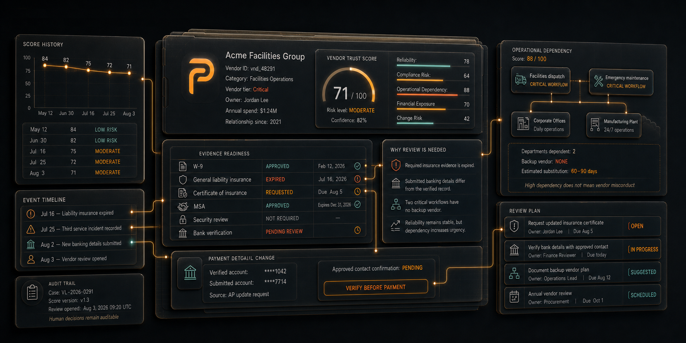
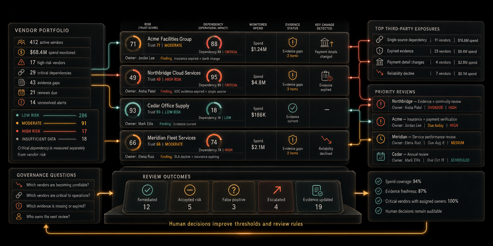

Reliability and service history
Track incidents, disputes, delivery patterns, SLA performance, escalations, and material changes against the vendor's own history.

Data & Vendor Intelligence
See which vendors are risky, critical, or missing evidence before operations are exposed.
Combine ERP, procurement, contract, compliance, payment, performance, and dependency signals into one explainable vendor profile. Give finance, procurement, operations, and risk teams clear trust scores, evidence, and recommended review actions.

Before third-party risk becomes disruption
VendorLens sits beside ERP, procurement, AP, contract, and GRC systems as a continuously updated intelligence layer. It ranks vendor relationships without forcing teams to replace the systems and approval workflows they already use.
Vendor intelligence loop
VendorLens resolves duplicate and changing records into a canonical vendor profile, calculates trust and dependency scores, explains what changed, and creates a review plan with source-linked evidence.

Focused signals
The first VendorLens release stays deliberately focused on explainable vendor intelligence, visible confidence, and manageable review queues instead of becoming another procurement suite.
Track incidents, disputes, delivery patterns, SLA performance, escalations, and material changes against the vendor's own history.
Surface missing, rejected, expiring, expired, waived, or accepted-risk evidence before reviews and audits.
Map the departments, systems, processes, contracts, and revenue streams that rely on each third party.
Detect duplicate records and meaningful changes to names, domains, contacts, tax details, bank references, and payment instructions.
Portfolio-level exposure
VendorLens connects trust, dependency, spend, evidence status, ownership, key changes, and review outcomes so leaders can see which third-party relationships deserve attention first.

Importance is not wrongdoing
A critical vendor is not automatically a bad vendor. VendorLens keeps trust risk, operational dependency, financial exposure, confidence, and accepted exceptions visible as separate decision inputs.
Collect vendor records, evidence, payment references, contracts, incidents, and dependencies.
Resolve uncertain identities and duplicates without silently merging ambiguous vendors.
Explain every material score change through reason codes and source-linked evidence.
Govern decisions as remediated, accepted risk, false positive, escalated, or evidence updated.
In development
VendorLens is being designed to make third-party risk legible and actionable while authorized reviewers retain final judgment. It will not silently approve vendors or treat incomplete data as confirmed misconduct.
Pilot partners
We are speaking with procurement, finance, accounts-payable, operations, compliance, and third-party-risk teams about real vendor records, evidence requirements, dependency questions, review workflows, and integrations.